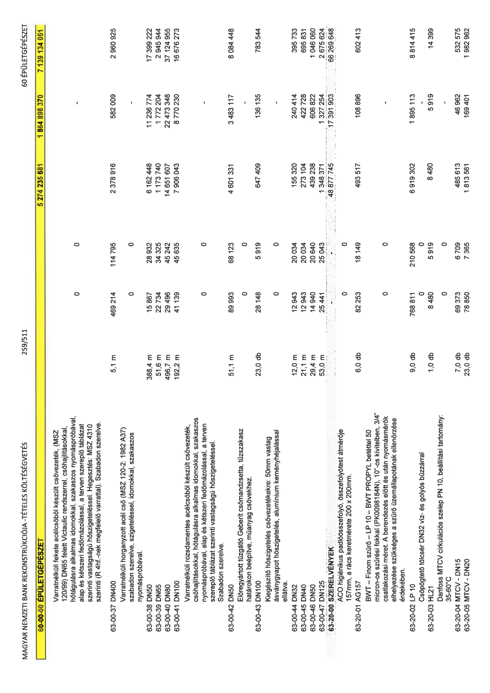

| Tétel | Menny. | Egys. | Anyag e.ár (net HUF) | Díj e.ár (net HUF) | Anyag összesen (net HUF) | Díj összesen (net HUF) | Anyag+Díj összesen (net HUF) |
|---|---|---|---|---|---|---|---|
| 60-00-00 ÉPÜLETGÉPÉSZET | NaN | NaN | 0 | 0 | 5 274 235 681 | 1 864 898 370 | 7 139 134 051 |
| Varratnélküli fekete acélcsőből készült csővezeték, (MSZ 120/99) DN65 felett Victaulic rendszerrel, csőhajlításokkal, hőtágulásra alkalmas idomokkal, szakaszos nyomáspróbával, alap és kétszeri fedőmázolással, a terven szereplő táblázat szerinti vastagságú hőszigeteléssel. Hegesztés: MSZ 4310 szerinti (R 4hF.-nek megfelelő varrattal). Szabadon szerelve. | 0 | 0 | 0 | 0 | 0 | 0 | 0 |
| 63-00-37 DN400 | 5,1 | m | 469 214 | 114 795 | 2 378 916 | 582 009 | 2 960 925 |
| Varratnélküli horganyzott acél cső (MSZ 120-2: 1982 A37) szabadon szerelve, szigeteléssel, idomokkal, szakaszos nyomáspróbával. | 0 | 0 | 0 | 0 | 0 | 0 | 0 |
| 63-00-38 DN50 | 388,4 | m | 15 867 | 28 932 | 6 162 448 | 11 236 774 | 17 399 222 |
| 63-00-39 DN65 | 51,6 | m | 22 734 | 34 325 | 1 173 740 | 1 772 204 | 2 945 944 |
| 63-00-40 DN80 | 496,7 | m | 29 496 | 45 242 | 14 651 607 | 22 473 348 | 37 124 955 |
| 63-00-41 DN100 | 192,2 | m | 41 139 | 45 635 | 7 906 043 | 8 770 230 | 16 676 273 |
| Varratnélküli rozsdamentes acélcsőből készült csővezeték, csőhajlításokkal, hőtágulásra alkalmas idomokkal, szakaszos nyomáspróbával, alap és kétszeri fedőmázolással, a terven szereplő táblázat szerinti vastagságú hőszigeteléssel. Szabadon szerelve. | 0 | 0 | 0 | 0 | 0 | 0 | 0 |
| 63-00-42 DN50 | 51,1 | m | 89 993 | 68 123 | 4 601 331 | 3 483 117 | 8 084 448 |
| Előregyártott tűzgátló Geberit csőmandzsetta, tűzszakasz határokon beépítve, műanyag csövekhez. | 0 | 0 | 0 | 0 | 0 | 0 | 0 |
| 63-00-43 DN100 | 23,0 | db | 28 148 | 5 919 | 647 409 | 136 135 | 783 544 |
| Kiegészítő hőszigetelés csővezetékekre: 50mm vastag ásványgyapot hőszigetelés, alumínium keményhéjalással ellátva. | 0 | 0 | 0 | 0 | 0 | 0 | 0 |
| 63-00-44 DN32 | 12,0 | m | 12 943 | 20 034 | 155 320 | 240 414 | 395 733 |
| 63-00-45 DN40 | 21,1 | m | 12 943 | 20 034 | 273 104 | 422 728 | 695 831 |
| 63-00-46 DN50 | 29,4 | m | 14 940 | 20 640 | 439 238 | 606 822 | 1 046 060 |
| 63-00-47 DN125 | 53,0 | m | 25 441 | 25 043 | 1 348 371 | 1 327 254 | 2 675 624 |
| 63-20-00 SZERELVÉNYEK | NaN | NaN | 0 | 0 | 48 877 745 | 17 391 903 | 66 269 648 |
| ACO higiénikus padlóösszefolyó, összefolyótest átmérője 157mm, a rács keretmérete 200 x 200mm. | 0 | 0 | 0 | 0 | 0 | 0 | 0 |
| 63-20-01 AG157 | 6,0 | db | 82 253 | 18 149 | 493 517 | 108 896 | 602 413 |
| BWT – Finom szűrő – LP 10 – BWT PROPYL betéttel 50 micron-os szűrési fokkal (PK0098184N), 10”-os kivitelben, 3/4” csatlakozási méret. A berendezés előtt és után nyomásmérők elhelyezése szükséges a szűrő üzemállapotának ellenőrzése érdekében. | 0 | 0 | 0 | 0 | 0 | 0 | 0 |
| 63-20-02 LP 10 | 9,0 | db | 768 811 | 210 568 | 6 919 302 | 1 895 113 | 8 814 415 |
| Csöpögtető tölcsér DN32 víz- és golyós bűzzárral | 0 | 0 | 0 | 0 | 0 | 0 | 0 |
| 63-20-03 HL21 | 1,0 | db | 8 480 | 5 919 | 8 480 | 5 919 | 14 399 |
| Danfoss MTCV cirkulációs szelep PN 10, beállítási tartomány: 35-60°C | 0 | 0 | 0 | 0 | 0 | 0 | 0 |
| 63-20-04 MTCV - DN15 | 7,0 | db | 69 373 | 6 709 | 485 613 | 46 962 | 532 575 |
| 63-20-05 MTCV - DN20 | 23,0 | db | 78 850 | 7 365 | 1 813 561 | 169 401 | 1 982 962 |
